［Nature，Vol.VⅢ.Nos.183，184，pp.14-17，36，37.］
就已知情形而言，几何既假定了空间的概念也假定了在空间进行构造的基本原则，然而它只是给出了它们名称上的定义，而真正决定性的东西是以公理的形式出现的．这些假定之间的关系依然处在模糊之中，我们既不能感受到它们的关联有多远，是否必要，事先也不了解这是否可能．
从欧几里得到勒让德（最著名的现代几何学家的名字），这种模糊状态既没有被数学家们，也没有被那些对此关心的哲学家们厘清．个中的原因无疑在于多重的广义量的一般概念仍然没有完全成形．因此我首要给我自己订立的任务是由一般的量的概念构建一个多重的广义量概念．由此得到的推论表明，一个多重的广义量应能容纳不同的量关系，因而我们日常的空间只不过是个三重广义量的一个特殊情形，然而由此的一个必然推论是，几何的命题不能由量的一般概念导出，而将通常的空间与其他可想象的三重广义量区别开来的仅仅出自经验，因此引发了寻找能确定空间量关系的最简单事实的问题；这不是一个由此情形的性质能完全决定的问题，原因在于由许多事实构成的体系才足以决定空间的量关系：对于我们当前目的而言的最重要体系是欧几里得作为基础所制定的．这些事实，像所有其他事实一样，并非必要，它们只不过由经验得到肯定；它们是些假设．因此我们可以研究它们是合理的概率有多少，这种概率当然在可观测的范围内非常大，需要问的是，在超越观测范围外，在无穷大和无穷小两侧，它们扩展的正当性如何．
在尝试进行解决这些问题中的第一个，即发展出一个多重广义量的概念，我觉得我需要对我从事这种带有哲学性质的事的非熟练性能有更宽容的批评，那里的困难更多地在于概念本身而不是构造；除了枢密顾问高斯发表在他在《格丁根学人观点》（Gottingen Gelehrte Anzeige）中的关于双二次剩余的第二篇文章，及他的纪念小册子中极短的对此的暗示，以及Herbart的一些哲学研究外，我没有其他先行的工作可用．
§1．有了一个预先的，确认了各种不同特定对象的一般概念之后，才可能有量概念，按照在这些特定对象之间是否存在从一个到另一个的连续路径，它们形成了一个连续的或离散的流形；在第一种情形中，称个体的特定对象为该流形的点，而在第二种情形称其为元素．其特定对象构成一个离散流形的这个概念是如此普通，至少在高雅的语言中，任何一些指定的事物总可以找到它们所隶属的概念（数学家们因而会毫不犹豫地根据公设：所给定的事物视为彼此等价找出离散量的理论）．另一方面，其特定对象构成一个连续流形的概念的场合是如此之少且相距遥远，以致其特定对象构成多重广义流形的仅有的简单概念只是可感对象的位置以及色彩．这些概念的创造和发展首先出现在高等数学之中．
称由一个标记或者一条边界区分开的一个流形的确定部分为量块.它们之间在量方面的比较，在离散量情形是由计数完成的．而在连续量情形则由测量完成．测量在于将那些进行比较的量进行叠加；因此需要一个方法，使用一个量作为其他量的标准．没有这个，我们只能在一个量是另一个的一部分时进行比较；在这种情形我们也只能决定较多或者较少，而不是有多少．在这种情形所能进行的研究形成了一门有关量的一般的科学分支，在那里的量既不是被看作独立于位置的存在，也不是看作借助单位表达的，而是作为一个流形中的区域．这样的研究对于数学的许多分支已成为必要，譬如，对于多值解析函数的处理；另外需要它们的一个首要原因无疑在于，阿贝尔的著名定理以及拉格朗日，普法夫，雅可比对于微分方程的一般理论为何在如此长的时间里会没有成果．从有关广义量科学中没有任何假定而只有它的概念的一般层面出发，就我们当前的目标而言，它已足以带来两个显著的结果：第一个与构造多重广义流形的概念有关，第二个则与在一个已知流形中的位置的确定化成数量的确定有关，并且它还将厘清一个n重扩充的真正特性．
§2．在其特定对象构成一个连续流形的这种概念的情形，如果现在人们设想，这次这个流形以一种确定的方式过渡到完全不同的另一个流形，即每个点因而过渡到另一个的确定的点，那么如此得到的特定的情形构成了一个双向延伸的流形．以相似的方式人们得到一个三向延伸的流形，这只要人们想象一个双向延伸的流形，以一个确定的方式过渡到另一个完全不同的流形；容易看出这个构造该如何进行下去．如果人们将这个可变的对象看作替代它的确定性的概念，那么这个构造就可以描述为一个出自n维的可变性和一个一维可变性合成的n+1维的可变性．
§3．我将表明如何反向地分解一个给定区域的可变性为一个一维可变性和一个较低维可变性．为此让我们假定有一个一维流形的可变段，从一个固定的原点算起，而它的值可以相互比较，对应于所给流形的每个点有它一个确定的值并随点的变化一起变化；或者，换句话说，让我们在所给流形内取一个位置的连续函数，另外，它在该流形的任何部分均不为常值，使此函数为相同值的点系于是构成一个连续流形，其维数低于所给的那个．这些流形当该函数变化时便相互连续地转移；因此，我们可假定由它们中的一个出发，去生成其他的，一般说来，这可在这样一种方式下实现，即每个点转移到另外流形上的确定点；在这里例外情形没有予以考虑（对它的研究是重要的）．据此，在所给流形上确定位置化成了决定一个数量和确定在一个低维流形上的位置．现在容易证明，当给定流形是n重广义的时，这个流形的维数为n-1．那么，重复这个运作n次，在一个n重广义流形上确定位置便化为n个数量的确定，因而，当这是可能的时，在一个给定流形上确定位置便化为了有限个数量的确定．存在一些流形，要确定在它们上的位置需要的不是有限个数而是一个无穷的序列，或者数量的确定本身构成了一个连续的流形，例如，确定在一个给定的区域上所有可能的函数，一个实心体的所有可能的形状，等等．
在构建了n维流形的概念之后，发现它的真正的特性在于这个性质，即在其中位置的确定可归结为n个量的确定，我们于是出现了上面所提出的第二个问题，即研究一个流形有可能具有的度量关系，以及足以确定它们的条件．这些度量关系只能利用数量的抽象观念予以研究，它们对于其他量的相关性也只能以公式来表达．但是按照某些假定，它们可以分解为能够几何表示的各自分离的关系；因而几何地表达计算结果成为可能．这样，要达到坚实的基础，的的确确，我们回避不了在我们的公式中的抽象考虑，但至少计算的结果随后能以一种几何的形式表述．在高斯的著名的论文《曲面的一般研究》（Disqusitiones generales circa superficies curvas）中已建立了该问题的这两部分的基础．
§1．确定度量应该要求这些数量与位置无关，这可以以各种方式实现．首先提出的，也是我在此要发展的假设是，根据它曲线的长度与它的位置无关，从而每条曲线是可用其他的每条曲线来度量的．固定位置化为固定数量，从而在n维流形中一个点的位置可借助于n个变量x1，x2，x3，…，xn表达，确定一条曲线归结为将这些量作为同一个单变量的函数给出．因此问题在于建立对于一条曲线的长度的数学表达式，为此目的我们必须将这些量x看成是可用某个单位表达的，我将只在某些限制下处理这个问题，而我自己则主要局限在曲线上，这时各个变量的增量值dx连续变化．我们可以确信，这些线可被分割成元（小段），在其上量dx的值可以看为常数．于是问题化成在每个点建立一个对于从该点算起的线元ds的一般表达式，这个表达式因此含有各个量x和dx.其次，我将假定线元的长度，当这个元的所有点受到同一个无穷小位移下，在一阶量级上不变，这同时意味着如果所有的量dx以同一比率增加时，该线元也以相同的比率变化．在这些假定下，线元将会是这些量dx的一阶齐次函数，它在所有dx的符号改变时不变，且其中的任意常数是量x的连续函数．为了找出最简单的情形，我首先找寻对于n-1维的流形的一个表达式，这个流形的各处与线元的原点等距；那就是说，我要找一个位置的连续函数，使它在这个位置的值与其他的相互区别开．从这个原点向外，它的值必定或沿所有方向都增大，或沿所有方向都减小；我假定沿所有方向增大，因而在那个点有极小值．然后如果这个函数的一次和二次微分的系数为有限，那么它的一次微分必为零，而二次微分不可能为负；我设其总为正．这个二次的微分表达式当ds保持常值时为常值，且当dx从而ds以同一比率增大时它以二重的比率增大；因此它必定为ds2乘以一个常数，于是ds是量dx的一个二次的总为正的整齐次函数的平方根，而且它的系数为量x的连续函数．对于空间，当点的位置由直角坐标表示时，
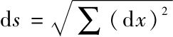
；因此空间是最简单情形之一．其次简单的情形包括有那些流形，它们的线元可表达为一个二次微分的表达式的四次根，对这种更加一般类型的研讨并不需要真正不同的原理，只是要花相当多的时间而对空间的理论却少有新意，特别这些结果并不能几何地表达；因此我自己只局限在一个其线元为二次的微分式的平方根表达式的流形上．如果把n个独立变量的函数替换成n个新的独立变量，我们则将这样的流形变化为相似的另一个．但按此方式我们不能将任何一个表达式表换成任何其他一个；由于这个表达式包含有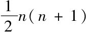
个系数，而它们是这些独立变量的任意函数；现在用引进新变量的方式也只能满足n个条件，因而只能使最多n个系数等于事先设定的量．剩余的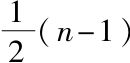
个于是完全被所表述的连续体的性质所决定，从而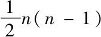
个位置的函数被要求用来确定其度量关系．像在平面和空间那样其线元可化为形式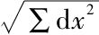
的流形，因而只是在这里所研讨流形的一个特别情形；它们需要一个特殊的名称，以表明这些流形的线元平方可表达成完全微分的平方和，我称其为平坦流形，现在为了仔细查验具有这种形式的我们所陈述的这类连续体，有必要从由于表达方式而出现困难的状况中摆脱出来：这只要按照一个确定的原则选取变量就可做到．§2．为此目的，设想我们已经从任意给定点出发构造了最小范围内的一个系统；在其中任意一个点的位置由它所在的通过该定点的最短线的初始方向，以及从定点沿该线所测出的距离决定．因此它可用dx在此最短线上的值dx0与这条线的长s的比值表达．让我们现在以它们的线性函数dx代替dx0，使得线元平方的初始值等于这些表达式的平方和，故而这些独立变量现在成了长度s及增量dx的函数．最后取与它们成比例的量x1，x2，x3，…，xn代替dx，但使得它们的平方和等于s2．当我们引进这些量时，线元的平方对于x的无穷小值是∑dx2，然而在它中的下一个阶的项等于
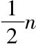
（n-1）的量（x1dx2-x2dx1），（x1dx3-x3dx1），…的二次齐次函数，因而是一个四阶的无穷小，故而除以顶点在（0，0，0，…），（x1，x2，x3，…），（dx1，dx2，dx3，…）的三角形面积的平方便得到了一个有限量．这个量只要x和dx仍旧在同一个二次线性形式中，或者只要从0到x和从0到dx的两条最短线仍然在同一个曲面元中，这个量就保持原来的值不变；因此它只取决于位置和方向，当所考虑的流形为平坦，即当线元的平方可化为∑dx2时，它显然为零，因而可将它看作该流形在此点沿所给曲面方向对平坦性离差的度量．乘以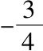
它便成了枢密顾问高斯所谓的曲面的全曲率．为了决定一个能够以所假定的这个形式表示的流形的度量关系，我们发现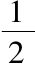
n（n-1）个位置函数是必需的；因此如果给出了在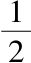
n（n-1）个曲面方向中的每点的曲率，那么这个连续体的度量关系便可由它们决定——但要假定在这些之中没有恒等关系；事实上，一般说来，情况并非如此，这样，一个线元是二次微分的平方根的流形的度量关系可以以完全独立于独立变量选取的方式表达，为同一目的，一个完全相似的方法也可应用于其线元不是如此简单的表达式的流形上，譬如线元为二次微分的四次根的流形．这种情形一般说来其线元不再能化成平方和的平方根，因而在平方线元时与平坦性的离差是一个二阶无穷小，而在后一种情形的流形则为四阶．从而这种情形下的连续体的性质可以称做最小部分的平坦性．我们在这里为此目的对这些连续体进行研讨的最重要的性质是，二维连续体这些关系可以用曲面来几何地表示，而更高维的连续体的这些关系则可化到它们所包含的曲面的那些关系上；对此需要进行简短的讨论．§3．在曲面的概念中，有只考虑了曲面上曲线长度的内蕴的度量关系，而这个内蕴关系总与位于曲面外的点的位置混杂在一起．但如果我们考虑那些使得曲线长不变的形变，即如果将曲面按任意方式弯曲而不进行拉伸，并将所有如此处理的相关曲面看成相互等价，那么我们便能从外在的关系中将内在的抽象出来．譬如，可将任一柱面或锥面等价地算作一个平面，这是因为这可通过弯曲而保持内在的度量关系不变做到，因此全部平面度量的几何在它们那里保持有效．另一方面，它们在本质上不同于球面：球面在无伸缩下不可能变成平面．根据我们前面的研讨，一个像曲面那样具有表达为二次微分平方根线元的二维流形，其内蕴度量关系由全曲率刻画．在曲面情形这个量可以形象地解释为两个主曲率的乘积，或者，该主曲率乘以测地小三角形的面积等于相同的三角形的球面角盈．第一个定义假定了命题：两个曲率半径的乘积在只有弯曲的变化时不变；而第二个，则假定了在同一处一个小三角形的面积与它的球面角盈成比例．为了在n维流形的一个点以及通过此点的一个曲面方向上给出一个有意义的曲率，我们必须从如下事实着手，即从一个点出发的测地线，当初始方向给定时就完全决定．按照这个方式，如果我们从所给点延伸所有的测地线并一开始便在所给曲面方向内，则得到了一个确定的曲面；这个曲面在所给点具有一个确定的曲率，它也就是这个n维连续体沿所给曲面方向在该点的曲率．
§4．在应用于空间前，有必要对于一般的平坦流形做一些考察，也就是考虑一下那些在它们上线元的平方表示为完全微分的平方和的流形．
一个平坦的n维流形在其每点沿所有方向的曲率为零；然而为了确定度量关系（根据前面的讨论）只要知道在每点沿
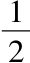
n（n-1）个独立的曲面方向上的全曲率为零就可以了．曲率处处为零的流形可以作为曲率为常数的特殊情形加以处理．曲率为常值的那些连续体共同特性因而也可表达成，它上面的图形可看作是没有伸缩的．无疑，如果在每点的曲率在所有方向上不相同的话，这些图形在它们中便不能随意移动或翻转；另一方面，流形的度量关系却完全由曲率确定；从而曲率在在此点和在其他点的在所有方向都是完全一样的，因此由它可以做出相同的构造：在一个常曲率的流形上，图形可给予其任意的位置．这类流形的度量关系依赖于曲率的值，而涉及解析表达式则可注意到，如将此值记为α，则其线元的表达式可写为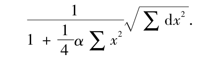
§5．常曲率的曲面理论可以用作一类几何的示例．容易看出正曲率的曲面可以附着在一个半径是此曲率平方根倒数的球面上；但为了观察这些曲面的完全的流形性质，我们让其中一个具有球面的形式，而其余的为在赤道与球面相切的旋转曲面的形式，具有比球面曲率大的那些曲面从内部切于该球面，而且具有一个环面（在轴）外侧部分的形状；它们可能附着在具新半径的球面上，但可能绕其不止一次．那些具较小曲率的曲面可从较大半径的球面上切去有两个大半圆界定的月形区域，然后将切口线黏合得到．零曲率曲面是与赤道相切的柱面；具有负曲率的曲面则从外侧与柱面相切并像环面内侧（朝向轴）的形状．如果我们将这些曲面看做是在其中移动的曲面区域的“现场（locus in quo）”，而空间则是实体移动的“现场”，曲面区域则可以在所有这些曲面中无伸缩地移动．具正常曲率的曲面总可以由曲面区域不通过弯曲构成，也就是说它们可构成球形曲面；但负常曲率的则非如此．除了曲面区域与位置的独立性外，在零曲率曲面上还与从位置出发的方向无关，在前面的那些曲面中则没有这个性质．
§1．如果我们假定了曲线长与位置的独立性以及线元由二次微分的平方根的可表示性，也就是说，最小部分的平坦性，则借助于对确定n维流形的度量关系的探讨，我们便可以叙述确定空间度量性质的充分必要条件了．
首先，它们因而可表达为：在每点的三个曲面方向的曲率为零；从而如果一个三角形的角之和总为两个直角，则空间的度量性质便被决定．
其次，如果按照欧几里得那样不仅假定存在线与位置的独立性．而且还假定了立体的位置独立性，则得出了曲率处处为常值；于是如果知道了一个三角形的内角和则在所有的三角形的角之和便确定了．
第三，人们可以不采用曲线长独立于位置和方向而是假定曲线的长和方向对于位置的独立性，按照这个概念，位置的差别或变化可以用三个独立单位的数组表达．
§2．在前面的探讨过程中，我们首先区分开了扩充或细分关系与度量关系，并发现相同的扩充性质可以具有不同的度量关系；于是我们研究了简单的确定大小的体系，利用它，空间的度量关系被完全决定，而有关它们的所有命题是这个体系的必然结果；仍然需要讨论的问题是，如何、在什么程度上以及在多大范围内，这些假定为经验所证实．对于这方面，在单纯的扩充关系和度量关系间有一个真正的区别．就前者而言，所有可能的情形构成了一个离散的流形，处于经验的断言在这里的确不能完全肯定，但却并非不准确；而后者中，所有可能的情形构成了一个连续的流形，由经验给出的每个界定仍然表现出不准确性：但其成立的可能性如此之大，以致可以说它几乎是完全正确的．但当这些由经验给出界定扩充到了可观察的范围以外，到了大小都不能测量的无穷大和无穷小的程度时，后一种关系无疑变得更为不准确，而前者则不然．
在空间构造被扩充到无穷大的程度时，我们必须区分无界性与无穷大性，前者属于扩充关系．而后者属于度量关系，空间是个无界的三维流形这个陈述是被外部世界的每个概念发展出来的一个假设；按照这个假设，认知的范围在每个瞬间都被完善着，被追寻物体的可能位置都被构造出来，而通过这些应用这个假设总是得到了自我肯定．按照这样的方式，空间的无界性拥有比外在经验更大的经验上的可靠性．但是由此绝对不能推出它的无穷大牲质；另一方面，如果我们假定了物体对于位置的独立性，从而由此可归结到空间的常曲率，那么，当这个曲率是个非常小的正值时这个空间必定有限．如果我们延拓所有从一个已知的曲面元出发的测地线，则应该得到一个常曲率的无界曲面，即在平坦的三维流形中的一个曲面，它具有一个球面的形式，从而有限．
§3．关于无穷大的问题对于解释自然界没有什么意义，然而关于无穷小的问题则不然．这取决于精确性，为此我们可以追踪现象直到无穷小，而我们对于那些现象间的因果关联的知识正是有赖于这种无穷小的观察．近几个世纪在力学知识方面的进步几乎完全依靠于构造的精确性，而这种精确构造之所以成为可能，则是通过无穷小分析的发明，以及通过由阿基米德、伽利略、和牛顿发现的简明原理，而这些仍为现代物理在使用．然而在自然科学中仍然需要对于这种构造的简明原理，我们寻求通过追踪这些现象到显微镜能够看到的极其微小的程度，以便发现这些因果关联，关于在无穷小的空间度量关系的问题因而并非是多余的．
如果我们认为物体独立于位置而存在，那么曲率便处处为常值，而又由天文观测得知它不能不为零；或者不管怎么说，较之于我们的天文望远镜的观测范围而言其大小可忽略不计．但是如果物体对于位置的独立性不存在，我们就不能从相对于无穷小的那些度量关系的大度量关系得出什么结论；在那种情形，如果空间的每个可测部分的总曲率明显地不同于零，则在每点的曲率在三个方向可能取任意值．如果我们不再假定线元可表示为一个二次微分的平方根，则可能会存在依然很复杂的关系．现在似乎赖以建立空间确定的度量基础的经验性的观念，一个实体和一条光线的观念不再对于无穷小有效了．因此我们可以十分自由地假定空间在无穷小处的度量关系不与几何假设相一致；事实上，如果我们因此而能得到各种现象的更简单的解释，我们就应该做出这样的假定．
几何假设在无穷小处的有效性问题与空间的度量关系的依据问题紧密相关联．我们可将其视为属于空间理论的后一个问题，对后一个问题，已经发现有如上所说的那种应用；就是说在一个离散的流形中，它的度量关系的依据已经由它的概念给出，而在一个连续流形中，这个依据必定来自外部．因此，要么在空间上的客观存在的事物一定形成了一个离散的流形，否则我们就必须在它外部去寻找作为作用于它的约束力量的度量关系的依据．
对这些问题的回答只能从一些现象的概念出发才能得到，这些现象迄今已被经验所证实，并被牛顿取做了一个基础，而且已经造成了在这个概念中的一些实际存在的事实所需要的一系列改变，而这些事实又是不能够予以解释的．从一般观念出发的研究，就像我们刚刚所做的那种研讨，只能在阻止这个工作不为过分狭隘的看法所牵制方面，以及在阻止被传统偏见阻挡了事物间相互关联的知识进步方面有用．
这将我们引进了另一门物理学科的领域，在那里，我们到现在还达不到这个工作的目的．
（胥鸣伟 译）
[1]英译本译者为William Kindon Clifford．